Statistics
Patients with Hypertension Crisis
{{crisis}} %
Patients with Stage 1 Hypertension
{{stage1}} %
Patients with Stage 2 Hypertension
{{stage2}} %
Patients with Normal BP
{{normal}} %
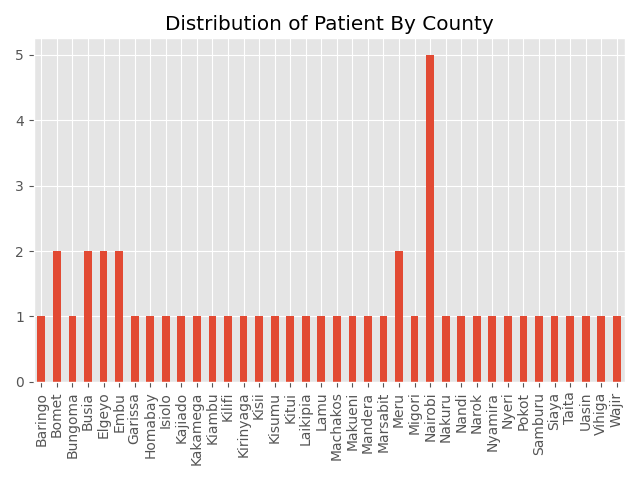
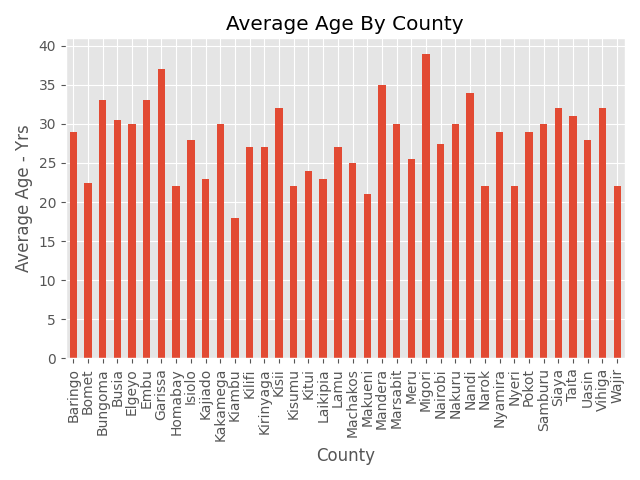
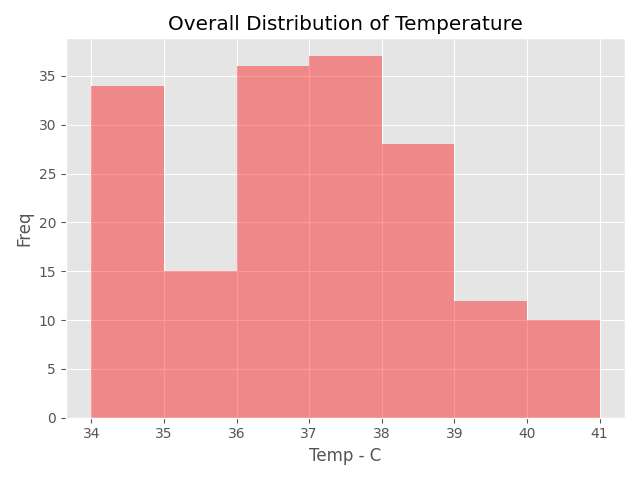
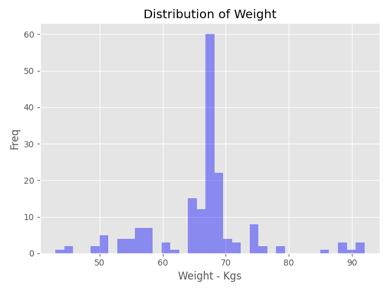
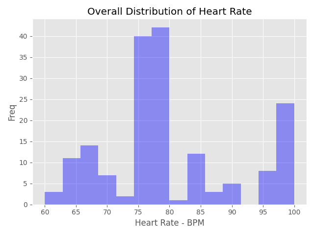
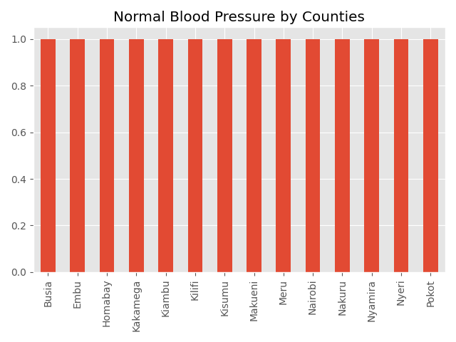
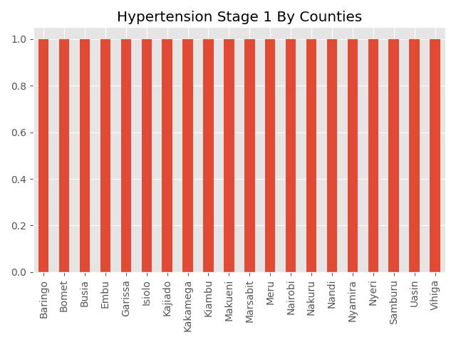
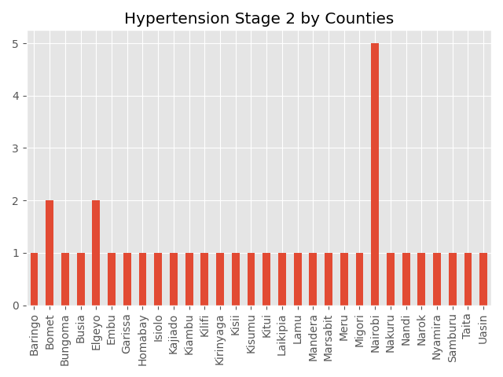
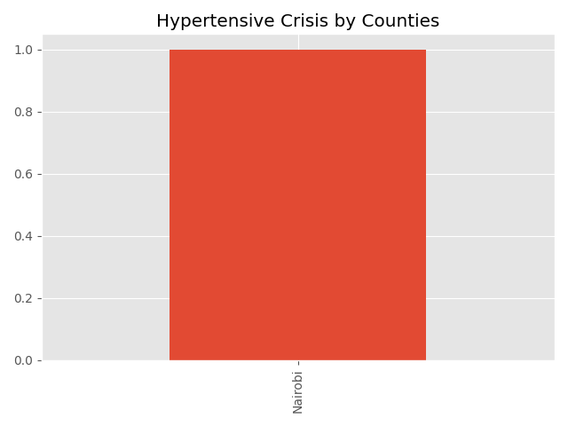
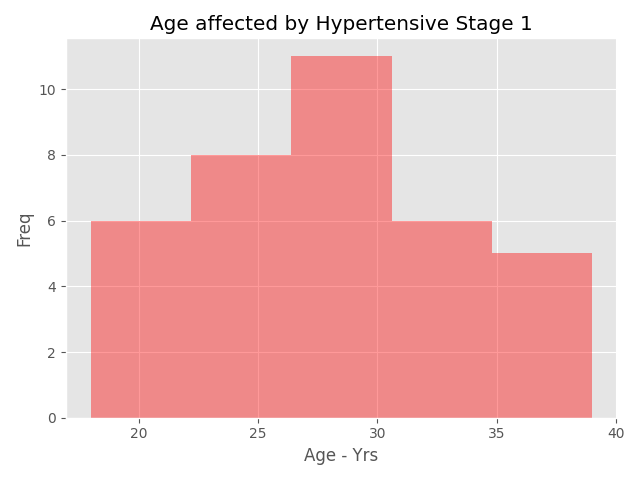
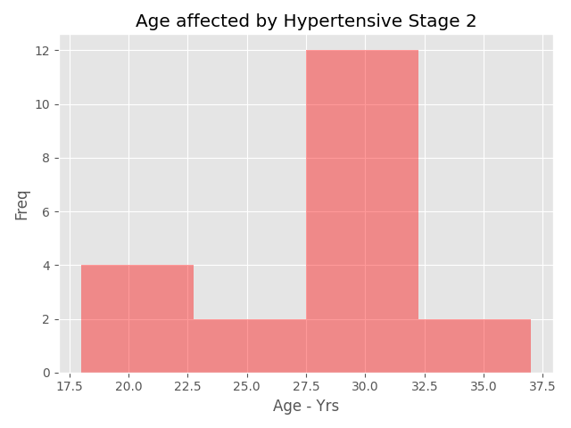
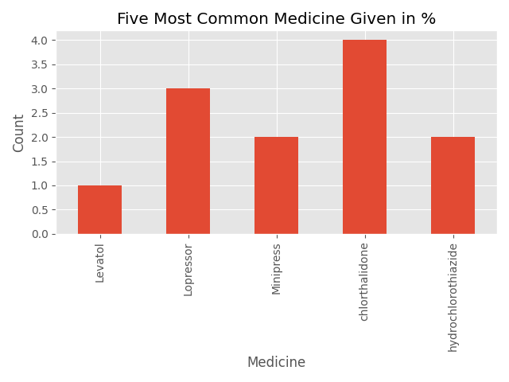
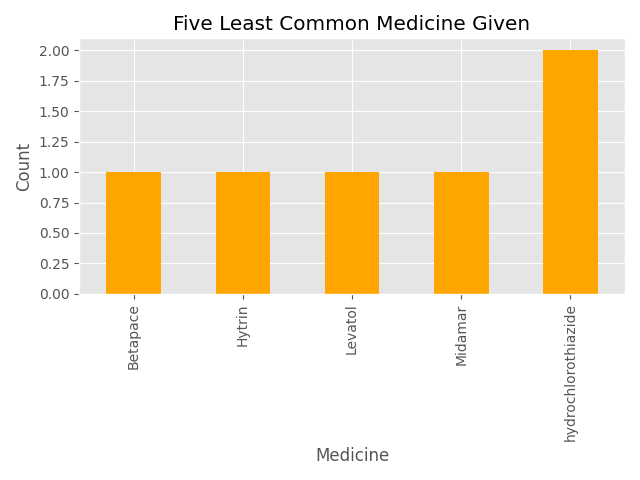